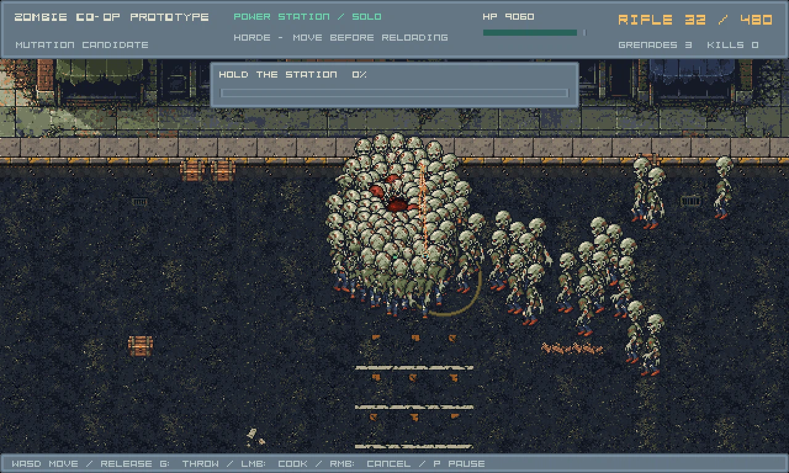
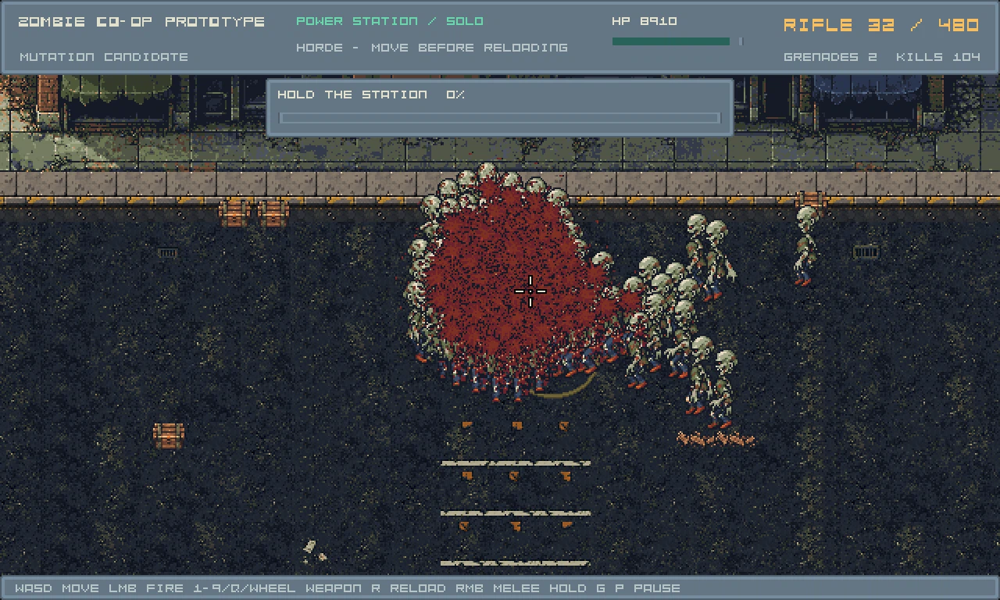
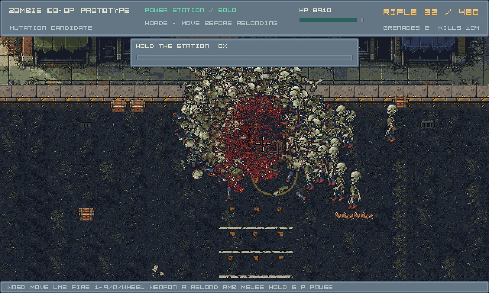
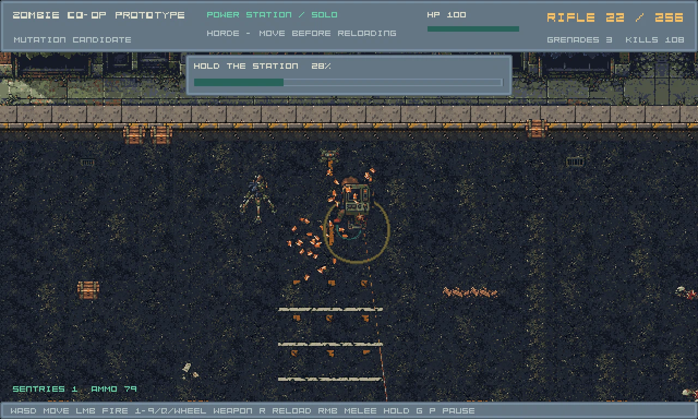
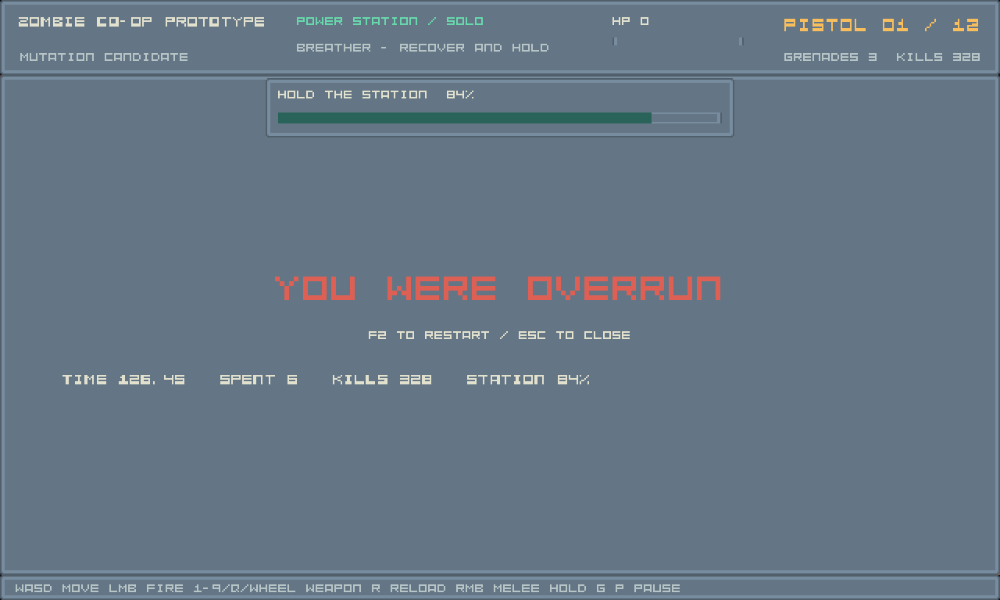

Playable launcher · Technical report · Actual mission outcomes · Measured workloads
Effective mixed capacity 40 → 128. Eight pulses schedule 488 enemies. Walker mass, bounded Runner flanks and rare telegraphed Sprinters reuse the current assets. Damage, ammo, player speed and spawn safety are unchanged.
Trial for human playtest. The real 100HP mission bot loses near 126s / 84% objective. Its failure remains a failure. The observer below uses QA-only 10000HP and no shooting to measure arrivals; visible centers do not imply separately readable silhouettes. Moving QA uses 1000HP. No FPS or fairness acceptance.
Matched static camera and ordinary simulation. Early 30s sampled mean visible centers: 6.86 → 19.57; sampled peak 40 → 128. All 256 new fixed/moving entries passed authored disc/bounds, player-distance and protected-view checks. The existing objective overlay occlusion remains a separate issue.
| Start | Count | Interval | Cue |
|---|
QA-only health. A real cooked/thrown grenade uses the shared flight, blast, reactions and gore pipelines. This is integration evidence, not human combat footage.



The encounter smoke result below is failed, not relabeled as success. The bot never throws grenades in encounter mode. Human trials must evaluate grenade/support choices, escape routes, legibility and difficulty.

